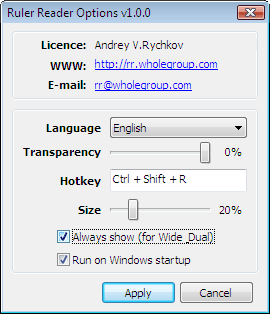

About Ruler Reader
Программа Ruler Reader представляет собой виртуальную линейку. С помощью программы вы сможете легче ориентироваться по тексту документа и не тратить время в поисках нужной строки. Вам достаточно будет поставить линейку в нужное место, и когда вы переключаете свой взгляд на рабочий документ, то глаза сразу сфокусируются в нужном месте.
В первую очередь программа предназначена для людей, которые много работают с электронными документами. Также виртуальная линейка сильно облегчает чтение документов с экрана монитора.
Используя виртуальную линейку Ruler Reader в своей работе вы получаете:
- Экономию времени при работе с электронными документами
- Экономию финансов на распечатке документов и покупке держателей бумаг
- Облегчение чтения текстов с экрана монитора
- Возможность работы на различных типах мониторов (обычный, широкоформатный, два монитора)
- Работу на основных версиях Windows (2000/XP/2003/Vista/2008)
Работа с текстом на одном мониторе
Для работы с текстом на обычном мониторе, программа Ruler Reader умеет выводить линейку только для нужных документов. При переключении на другой документ программа исчезнет с экрана, а при возврате снова покажется.
В данном режиме работы, виртуальная линейка по-умолчанию не отображается.
Работа с текстами на двух (Dual) мониторах
При использовании в работе двух мониторов удобно расположить один документ на одном мониторе, а вспомогательный документ на втором мониторе.
Работа с текстами на широкоформатном (Wide) мониторе
Работа программы на широкоформатном мониторе аналогична режиму работы на двух (Dual) мониторах. Также в некоторых случаях будет удобно использовать виртуальную линейку в режиме обычного монитора.
Настройка программы Ruler Reader
Для изменения параметров работы программы Ruler Reader нажмите правую кнопку мыши на виртуальной линейке или на значке программы ( - линейка) в правом нижнем углу рабочего стола (Windows трей). В всплывающем меню выберите пункт «Параметры».

Появившееся окно разделено на две части.
В верхней отображается справочная информация: владелец лицензии, адрес сайта программы, e-mail разработчика.
В нижней части вы можете изменить язык программы, установить прозрачность виртуальной линейки (0% - отсутствие прозрачности), комбинацию кнопок для показа/сокрытия линейки с экрана, размер виртуальной линейки относительно размера монитора (50% - линейка в длину будет занимать половину монитора).
При выборе пункта «Показывать всегда (для Wide и Dual)» (пункт выбран по-умолчанию) виртуальная линейка отображается на экране во всех программах. Данный режим работы программы предназначен для работы на двух мониторах или на одном широкоформатном. Если вы работаете за одним стандартным монитором, то этот пункт нужно отключить. В таком случае виртуальная линейка будет показываться только в тех программах, в которых вы ее включите с помощью заданной комбинации кнопок.
Если выбран пункт «Автоматический запуск программы», то программа Ruler Reader будет сама запускаться каждый раз при старте Windows.